Visualizing
Persistent
Data Structures
Data Structures are
"Accidentally"
Complicated
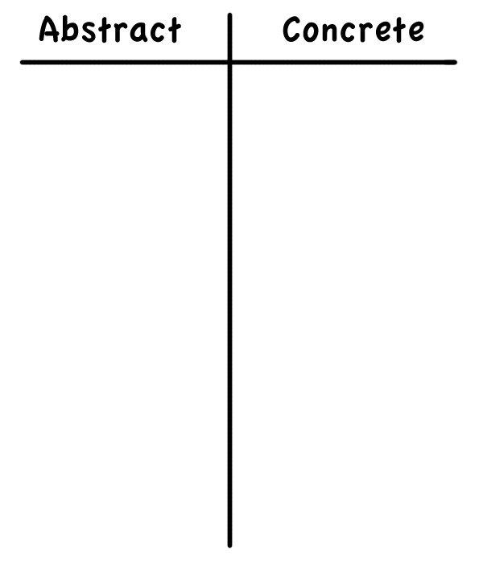
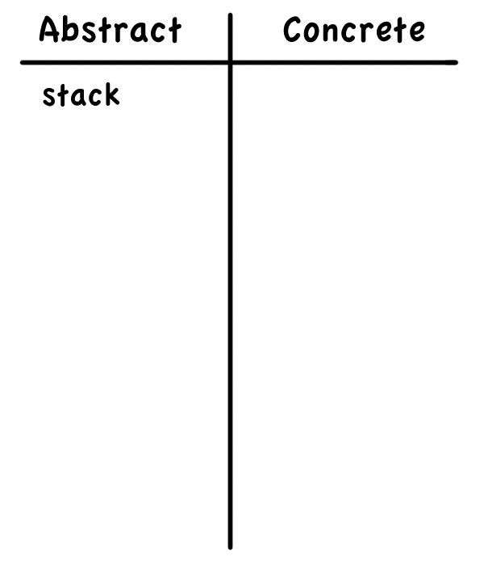
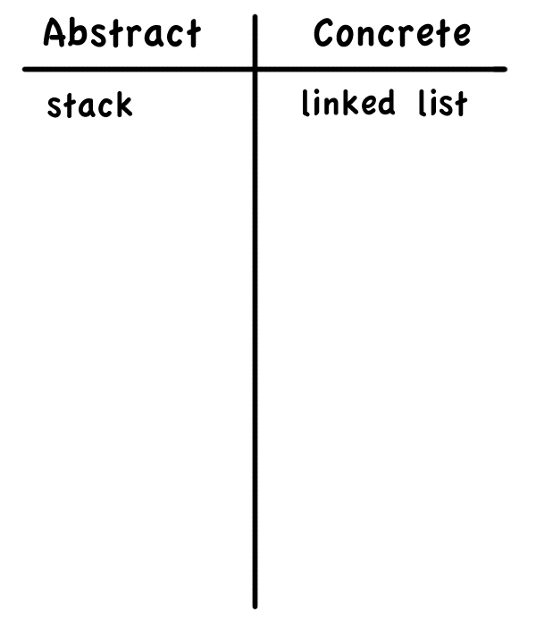
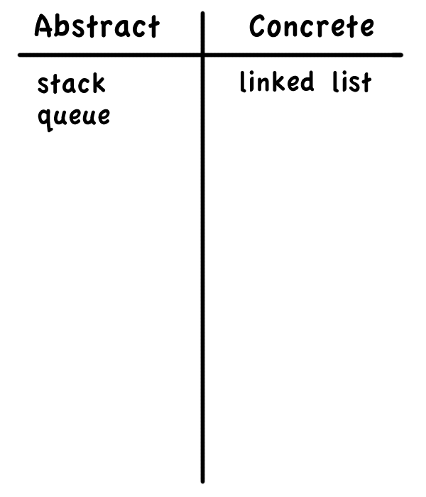
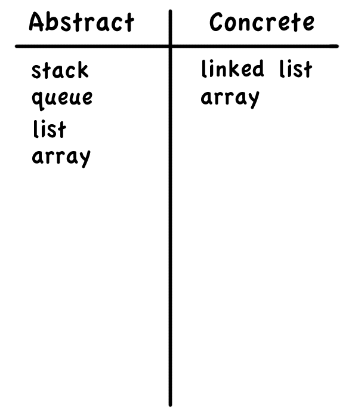
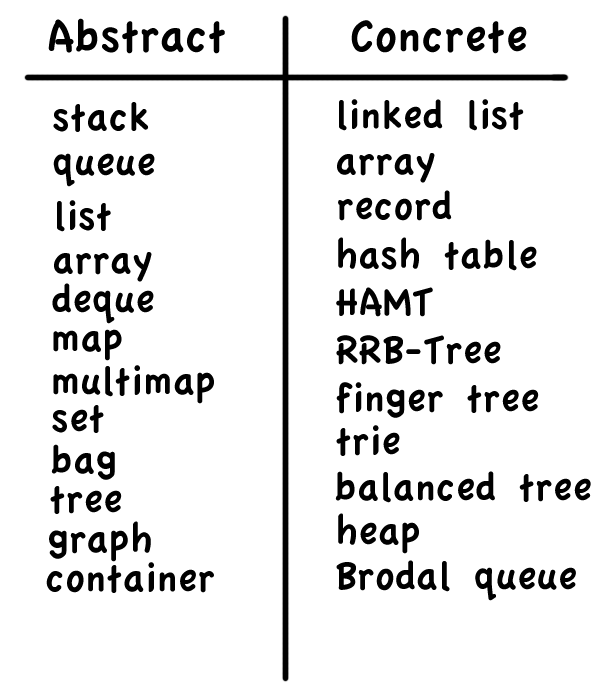
Rules of Thumb!
Rule #1
Generic Terms are Abstract
Rule #1
Generic Terms are Abstract
"Irregular cases":
- heap
- hash
- trie
- record
Rule #2
Adjectives => Concreteness
Rule #2
Adjectives => Concreteness
Unless there's too many:
Self-balancing binary search tree??
Rule #2
Adjectives => Concreteness
Or too few:
- Associative array
- Priority queue
- Double-ended queue
Rule #3
Eponymous? Concrete.
Rule #3
Eponymous? Concrete.
- Van Emde Boas tree
- Fenwick tree
- Brodal queue
- AVL tree
- AA tree
Rule #3
Proper name? Concrete.
- Fibonacci heap
- Hilbert R-tree
- Judy array
- PATRICIA tree
NO EXCEPTIONS
Families
Implementations form family trees
Some trees have concrete root nodes, like a B-tree or heap
Others don't: Self-balancing binary search tree
We can extract an API from common characteristics
"It's complicated"
Persistent or Ephemeral?
Ephemeral
--------O-
Persistent
-O-O-O-O-O-O-O-O-
Fully Persistent
+-O-O-O-O-
|
-O-O-+-O-O-O-O-O-O-O-
Confluently Persistent
+-O-O-O-O-+
| \
-O-O-+-O-O-O-O-O-+-O-O-
One weird trick for persistence
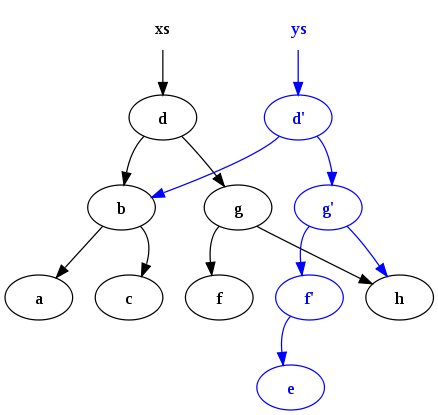
Trees for parallelism
Concrete Consequences
- Each operation has best, worst and average case behavior
- And each of those have asymptotic bounds like O, o, Ω, ω, and Θ
- And possibly fancy qualifiers like "amortized"
- There are also space implications
- And implementation complexity
- Which can impact the hidden constant costs
- And data locality concerns
- And ...
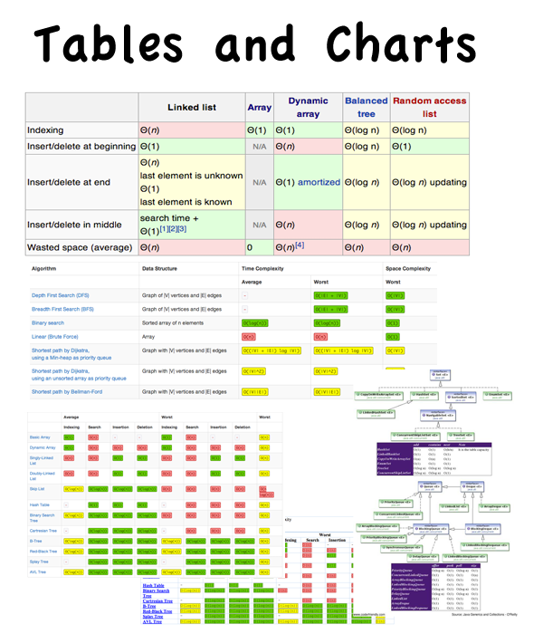
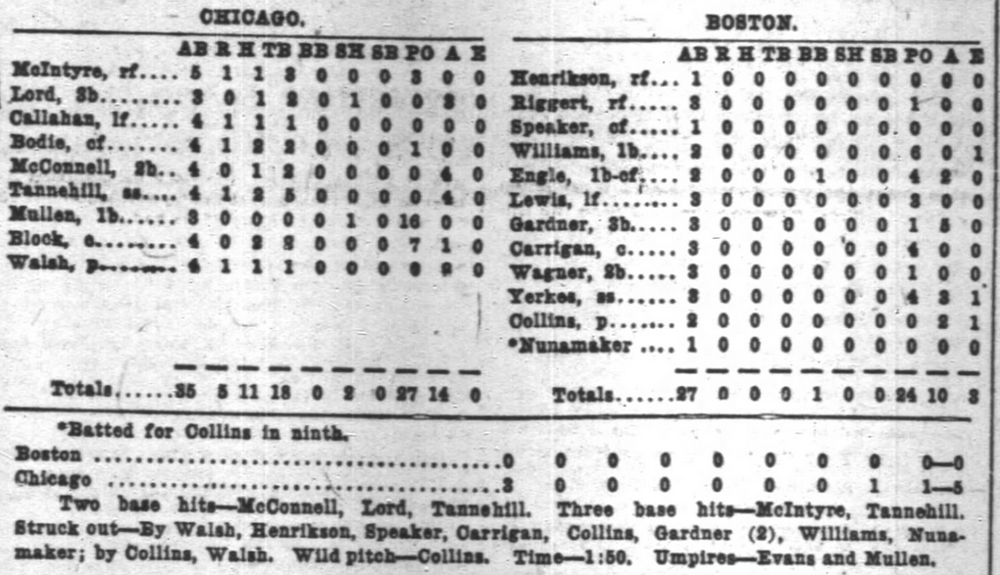
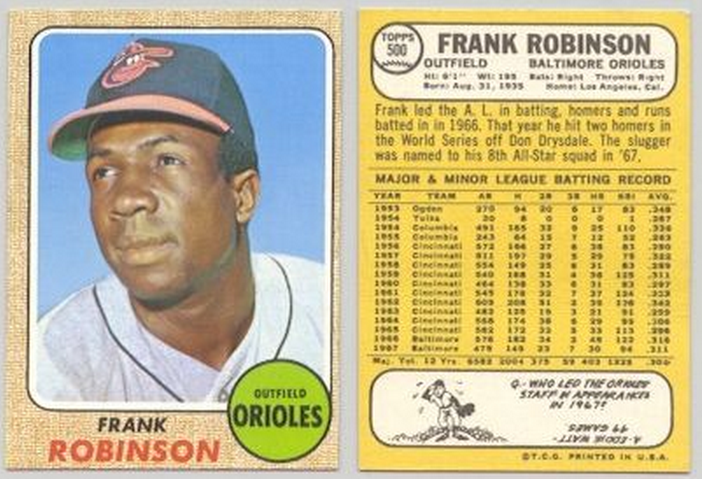
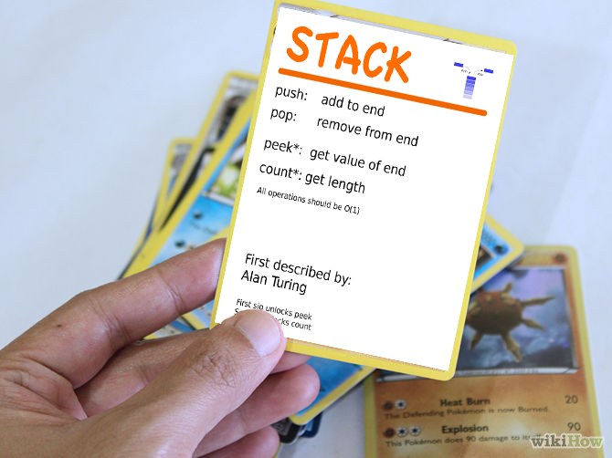
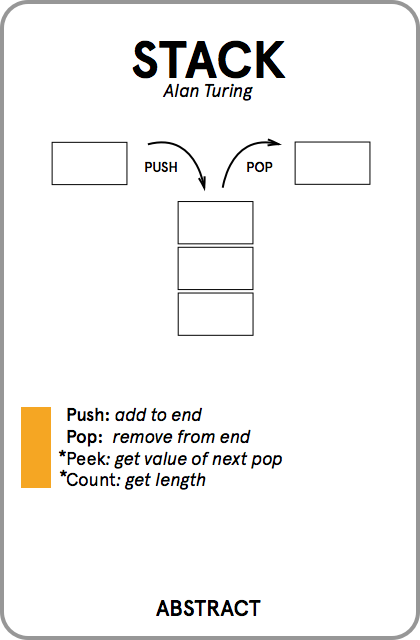
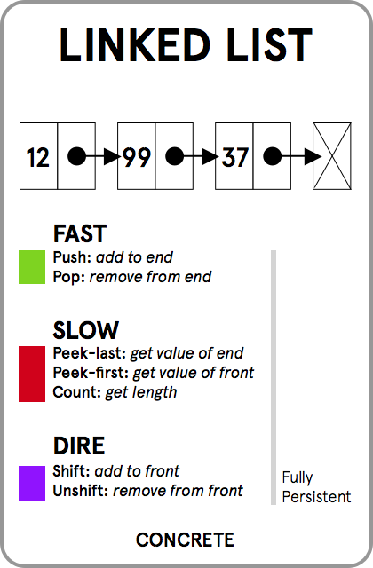
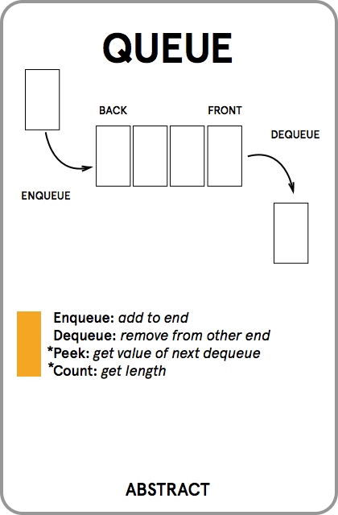
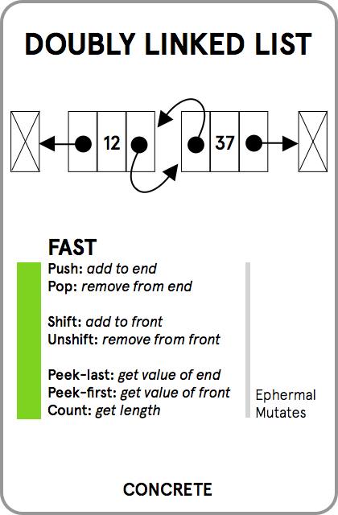
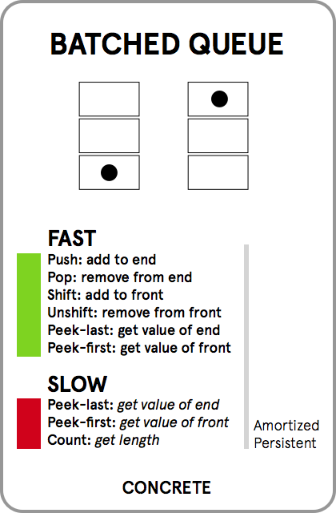
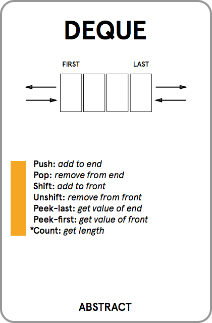
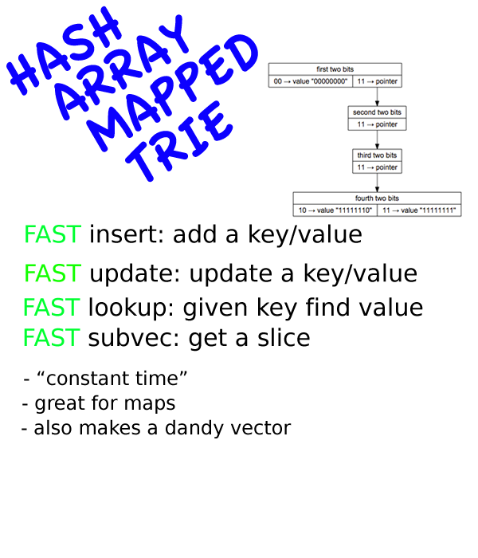
What about the data in my application?
Rules of thumb!
Data Structure Cards!
Visualize your data!
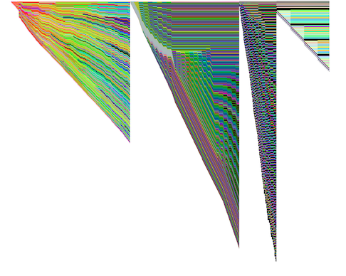
@dann
dxnn @ github
dann @ bentobox . net
datastructuresthegame . com